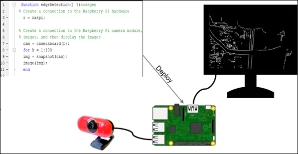
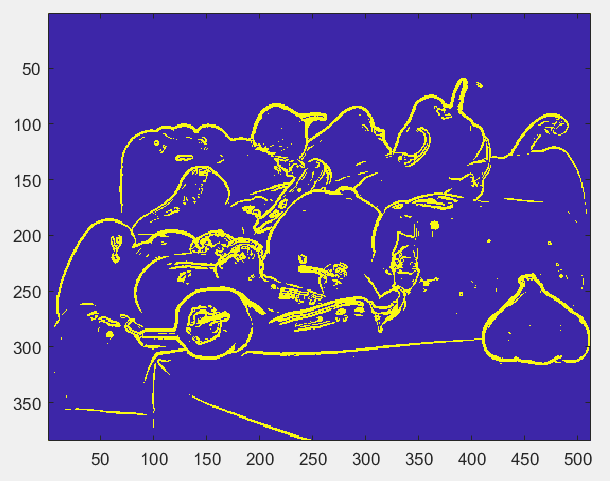
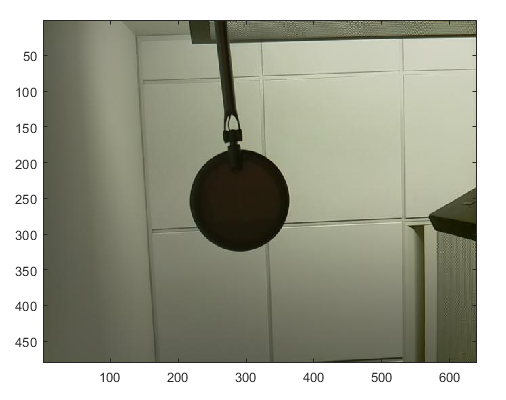
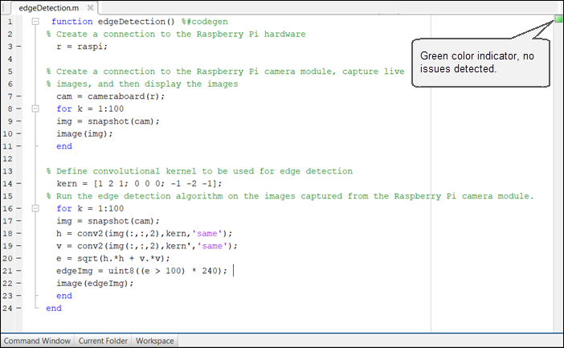
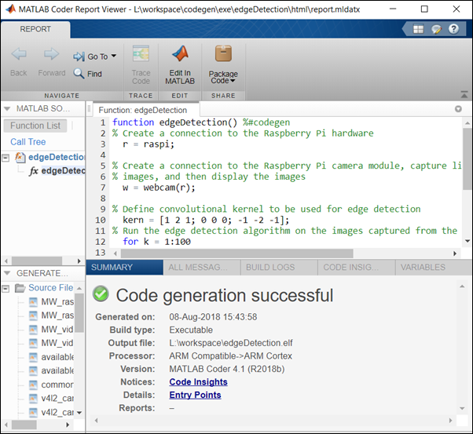

Deploy an Edge Detection Algorithm on the Raspberry Pi Hardware
This example shows you how to deploy an Edge detection function on the Raspberry Pi™ hardware as a stanalone executable using MATLAB® Support Package for Raspberry Pi Hardware. In this example, you will learn how to acquire live image from a webcam connected to the Raspberry Pi hardware, run the edge detection function on the acquired image, and display the result on the monitor that is connected to the same Raspberry Pi hardware.

Contents
- Prerequisites
- Required Products
- Step 1: Create and Run an Edge Detection Algorithm on a Stored Image
- Step 2: Modify the Edge Detection Algorithm to use Live Image from Hardware
- Step 3: Add the Compilation Directive to the MATLAB Function
- Step 4: Prepare the Edge Detection Function for Deployment
- Step 5: Create a Hardware Configuration Object
- Step 6: Deploy the MATLAB Function on Hardware
Prerequisites
Before you start with this example, we recommend you to complete these examples:
Required Products
- Raspberry Pi hardware
- A supported USB webcam or a Raspberry Pi camera module
- A monitor connected to the Raspberry Pi hardware
- MATLAB Coder license
Step 1: Create and Run an Edge Detection Algorithm on a Stored Image
1. Copy the edgeDetection function and paste it in the MATLAB Editor. The function implements an algorithm to read the peppers.png file from the computer, apply edge detection algorithm to peppers.png, and display the result as a MATLAB figure. The algorithm consists of a 3-by-3 Sobel operator that is applied to the image in horizontal and vertical directions, and then threshold against a constant value.
function edgeDetection()
% Define convolutional kernel to be used for edge detection
kern = [1 2 1; 0 0 0; -1 -2 -1];
% Read image from file and apply
img = imread('peppers.png');
h = conv2(img(:,:,2),kern,'same');
v = conv2(img(:,:,2),kern','same');
e = sqrt(h.*h + v.*v);
edgeImg = uint8((e > 100) * 240);
image(edgeImg);
end2. Save the function as edgeDetection.m to a folder to which you have write access.
3. Run the edgeDetection function by using the run command in the MATLAB Command Window. When you run the function, MATLAB starts executing the edge detection algorithm on the peppers.png file stored in your computer.
run edgeDetection

Step 2: Modify the Edge Detection Algorithm to use Live Image from Hardware
Before deploying, running the edgeDetection function by using live input and output (IO) from the hardware is recommended.
Using live IO enables you to:
- Verify that the MATLAB function is communicating with the hardware as expected.
- Detect run-time errors, such as peripheral conflicts, that are much harder to diagnose during deployment.
1. To use live IO, you must modify the function to capture live images using the webcam connected to the hardware.
function edgeDetection() % Create a connection to the Raspberry Pi hardware r = raspi;
% Create a connection to the Raspberry Pi camera module, capture live % images, and then display the images w = webcam(r);
% Define convolutional kernel to be used for edge detection kern = [1 2 1; 0 0 0; -1 -2 -1]; % Run the edge detection algorithm on the images captured from the Raspberry Pi camera module. for k = 1:100 img = snapshot(w); h = conv2(img(:,:,2),kern,'same'); v = conv2(img(:,:,2),kern','same'); e = sqrt(h.*h + v.*v); edgeImg = uint8((e > 100) * 240); image(edgeImg); end end
2. Run the edgeDetection function by using the run command in the MATLAB Command Window. When you run the function, MATLAB connects to the hardware and starts executing the edge detection algorithm on the images captured from the webcam connected to the hardware.
run edgeDetection

4. Observe the output and fine tune the edge detection threshold to suit the characteristic of the camera and environment, if required.
Step 3: Add the Compilation Directive to the MATLAB Function
Add the %#codegen directive (or pragma) after the edgeDetection function signature to indicate that you intend to deploy the function on the hardware. Adding this directive instructs the MATLAB Code Analyzer to help you diagnose and fix violations that would result in errors during deployment.
function edgeDetection() %#codegen
Step 4: Prepare the Edge Detection Function for Deployment
1. Check the edgeDetection function using Code Analyzer for any errors and warnings by following the steps in Check Code with Code Analyzer and fix them before proceeding to the next step.
In this example, the green color of the indicator specifies that the MATLAB function has no errors or warnings.

2. Debug the edgeDetection function and replace all the unsupported calls with the calls that are supported by code generation.
In this example, the image function used at line number 18 is not supported by code generation. Deploying the edgeDetection function without any modification will result in an executable that may not behave as expected.
To fix this unsupported function call error, replace image with an equivalent call that is supported by code generation. You can replicate the functionality of image by using the displayImage function provided by MATLAB Support Package for Raspberry Pi Hardware.
function edgeDetection() %#codegen % Create a connection to the Raspberry Pi hardware r = raspi;
% Create a connection to the Raspberry Pi camera module, capture live % images, and then display the images w = webcam(r);
% Define convolutional kernel to be used for edge detection kern = [1 2 1; 0 0 0; -1 -2 -1]; % Run the edge detection algorithm on the images captured from the Raspberry Pi camera module. for k = 1:100 img = snapshot(w); h = conv2(img(:,:,2),kern,'same'); v = conv2(img(:,:,2),kern','same'); e = sqrt(h.*h + v.*v); edgeImg = uint8((e > 100) * 240); displayImage(r,edgeImg,'Title','Edge Detection'); end end
Step 5: Create a Hardware Configuration Object
1. Create a hardware configuration object by using the targetHardware function in the MATLAB Command Window.
board = targetHardware('Raspberry Pi')board =
targetHardware with properties:
Name: 'Raspberry Pi'
DeviceAddress: '192.168.1.2'
Username: 'pi'
Password: '*********'
BuildDir: '/home/pi'
BuildAction: 'Build, load, and run'2. Verify the DeviceAddress, Username, and Password properties listed in the output. If required, change the value of the properties by using the dot notation syntax.
For example, to change the device address to 173.21.22.327, enter:
board.DeviceAddress = '173.21.22.327'
Step 6: Deploy the MATLAB Function on Hardware
Deploy the MATLAB function as a standalone executable on the hardware by using the deploy function.
deploy(board,'edgeDetection')
Code generation successful: View report
The deploy function initiates code generation of the edgeDetection function. At the end of code generation, MATLAB generates a code generation report. Use this report to debug the edgeDetection function for any build errors and warnings in the generated code.
After successfully generating the code, the support package loads and runs the code as a standalone executable on the hardware. The executable starts acquiring live images from the webcam, runs the edge detection algorithm on the acquired image, and then displays the result on the monitor.
